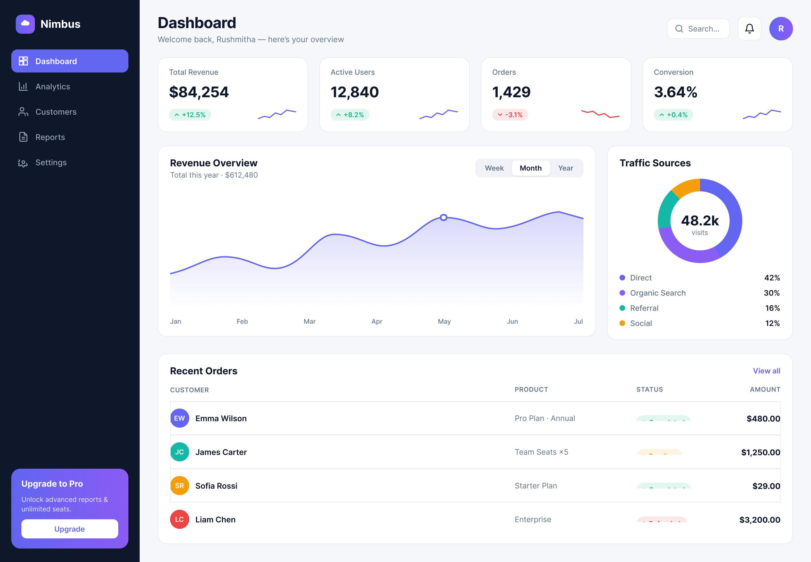
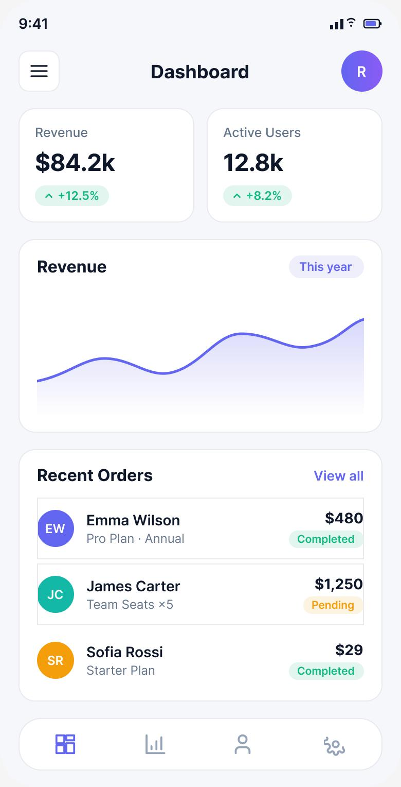

The Problem
Analytics tools drown teams in widgets. Users open the dashboard, can't quickly find the metric that matters, and end up exporting everything to a spreadsheet to actually make sense of it — which defeats the product's purpose.
How might we help busy teams reach the insight they need in seconds — without exporting to a spreadsheet?
Goals & Success Metrics
- ◎Hierarchy over densitySurface the 4–5 KPIs that matter; demote the rest.
- 📈Trend at a glanceEvery KPI shows change vs. last period, not just a number.
- ▤Scannable tablesStatus you can read in one pass — no interpretation required.
Target metrics: time-to-find KPI < 5s · table-scan task success > 90% · SUS > 80 · reduce “export to Excel” reliance.
User Research
Key findings
- 1A handful of metrics carry the weightRevenue, active users, orders and conversion — everything else is situational noise.
- 2Numbers need context“Is that good?” — users want comparison and trend, not an isolated figure.
- 3Tables are where ops livesAnalysts need status (paid / pending / refunded) legible instantly.
- 4Mobile check-ins are realLeaders glance at numbers on their phone between meetings.
Personas
Daniel Roy
"I don't need every chart. I need the number, whether it's up or down, and I need it now."
- Top-line KPIs + trend at a glance
- Check performance on mobile, fast
- Cluttered dashboards, too many widgets
- Numbers with no comparison
Aisha Hassan
"I live in the orders table. If I can't scan statuses quickly, I'm back in a spreadsheet."
- Filter & scan records efficiently
- Spot pending / refunded at a glance
- Dense tables with no visual status
- Exporting just to sort and read
User Flow — Get to Insight
Wireframes
Structure-first wireframes established a clear reading order: sidebar → KPI row → charts → table.
Hi-Fi Design & Prototype
A calm, hierarchy-driven dashboard: four KPI cards with delta + sparkline, a focused revenue trend with period toggle, a traffic donut, and an orders table where status reads at a glance — plus a mobile companion for on-the-go checks.


Key design decisions
- ◆KPI cards with contextValue + delta chip + sparkline answers “what & is it good?” together.
- ◆Period toggle on the chartWeek / Month / Year keeps the view focused instead of five charts at once.
- ◆Status badges (colour + dot + label)Scannable and accessible without relying on colour alone.
Usability Testing
6 participants (product & ops roles), moderated task-based sessions.
Tasks: (1) “Is revenue up or down this week, and by how much?” (2) “Find an order that's pending.”
| Metric | Target | Result |
|---|---|---|
| Time to find a KPI + trend | < 5s | 3.4s |
| Table-scan task success | > 90% | 100% |
| System Usability Scale | > 80 | 83 |
| “Would reduce exporting to Excel” | Majority | 5 / 6 |
What testing changed
Users wanted to switch the chart's timeframe without leaving the page. → Added an inline Week / Month / Year segmented toggle.
Status colour alone wasn't accessible. → Added a dot + text label to every status badge for colour-blind clarity.
Results & Impact
Reflection & Next Steps
The hardest design work was subtraction — deciding what not to show. Prioritising a few contextual KPIs beat a comprehensive-but-unusable grid every time. Accessibility (status beyond colour) was a small change with outsized impact.
Next: saved views per role, natural-language “ask your data”, and configurable alerts so insights find the user instead of the other way around.